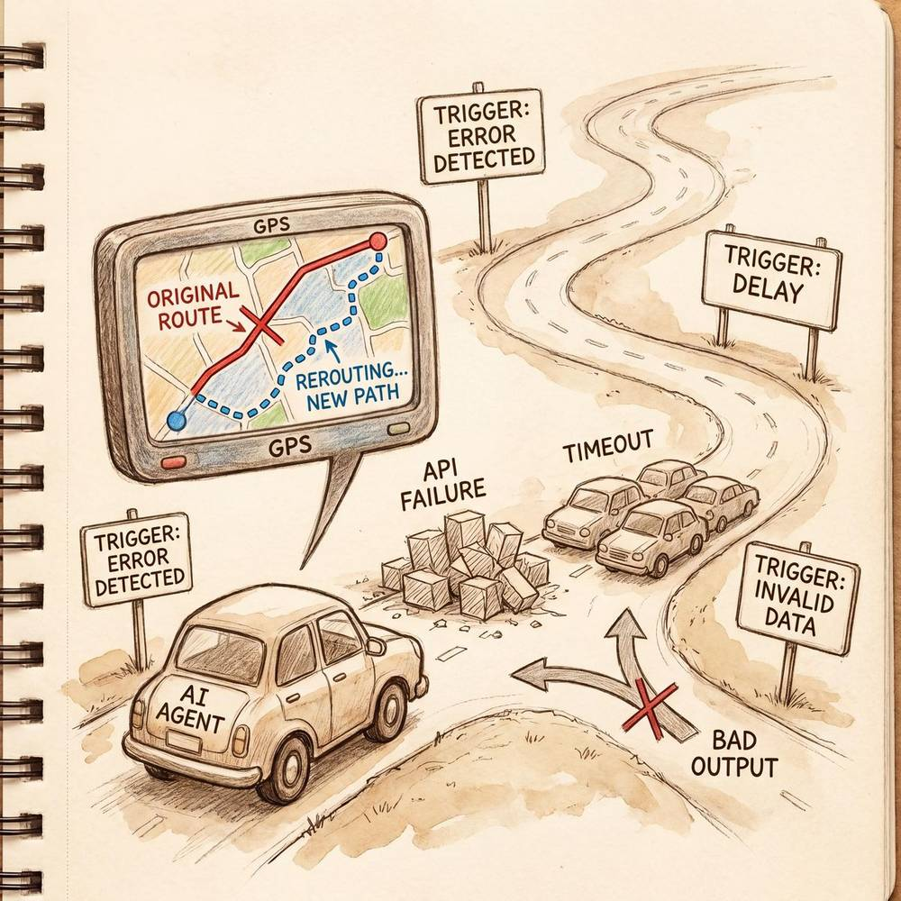

Chapter 7: Planning & Reasoning in AI Agents
"Illustrated AI Agent" Series - Chapter 7
7.1 Task Decomposition
Task decomposition is the ability to break complex goals into manageable sub-tasks. Approaches include top-down decomposition (recursively splitting until tasks are atomic), bottom-up composition (identifying available actions and combining them), LLM-based decomposition using structured prompts, and learned decomposition from examples. The section covers the MECE principle, dependency analysis between sub-tasks, and strategies for handling decomposition failures.


7.2 Self-Reflection
Self-reflection enables agents to evaluate and improve their own outputs. Key frameworks include Reflexion (learning from verbal feedback on past attempts), Self-Refine (iterative self-critique and improvement), and critic-based approaches where a separate evaluation process reviews outputs. This section covers reflection triggers, quality assessment criteria, error categorization, and how reflection depth trades off with latency and cost.
7.3 Tree Search & Monte Carlo Methods
For complex decision spaces, agents can use tree-based exploration strategies. Tree of Thoughts (ToT) maintains multiple reasoning branches and evaluates their promise before committing. Monte Carlo Tree Search (MCTS) uses random simulations to estimate path values, balancing exploration and exploitation. These techniques are particularly effective for problems with large solution spaces, multiple valid approaches, or where the optimal path isn't immediately obvious.
7.4 Plan-and-Execute Pattern
The Plan-and-Execute pattern separates planning from execution into distinct phases: first, a planner agent creates a comprehensive step-by-step plan, then an executor agent carries out each step. This separation provides better controllability, enables plan review before execution, reduces error propagation, and allows different LLMs to be used for planning (stronger model) vs. execution (faster/cheaper model). Compared with ReAct's interleaved approach, it offers more structured task management.
7.5 Dynamic Replanning
Real-world tasks rarely go exactly as planned. Dynamic replanning enables agents to detect when the current plan is failing, diagnose the cause (changed conditions, wrong assumptions, tool failures), and generate a revised plan without starting over. Strategies include checkpoint-based replanning, trigger-based replanning (activated by specific failure conditions), and continuous monitoring with incremental plan adjustments. The section also discusses when to replan vs. when to retry.

7.6 Comparison of Reasoning Approaches
A systematic comparison of different reasoning strategies: Direct prompting (fast but shallow), Chain-of-Thought (better accuracy, moderate cost), ReAct (grounded in observations, good for tool use), Tree of Thoughts (thorough exploration, higher cost), Plan-and-Execute (structured, good for complex workflows), and Self-Reflection (iterative improvement, latency overhead). Includes guidance on matching the right reasoning approach to specific task types and constraints.
7.7 Planning Limitations & Mitigations
Current Agent planning faces several limitations: difficulty with very long-horizon tasks, sensitivity to initial goal framing, challenges in accurate state estimation, tendency to get stuck in loops, and inconsistency across runs. Mitigation strategies include hierarchical planning (breaking long plans into phases), human-in-the-loop checkpoints, plan verification before execution, diverse planning attempts with selection, and hybrid approaches combining symbolic and neural planning.
Chapter Summary
Planning and reasoning are what separate intelligent agents from simple automation. The key techniques — task decomposition, self-reflection, tree search, Plan-and-Execute, and dynamic replanning — each address different aspects of the planning challenge. Effective agents typically combine multiple approaches, using lighter-weight methods for simple tasks and more sophisticated techniques for complex, high-stakes scenarios.
💡 Found this helpful? Follow us
Get more AI Agent learning resources and industry updates
 WeChat Official
WeChat Official
 Xiaohongshu
Xiaohongshu